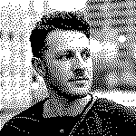
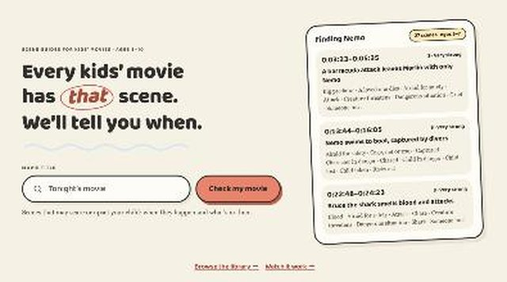
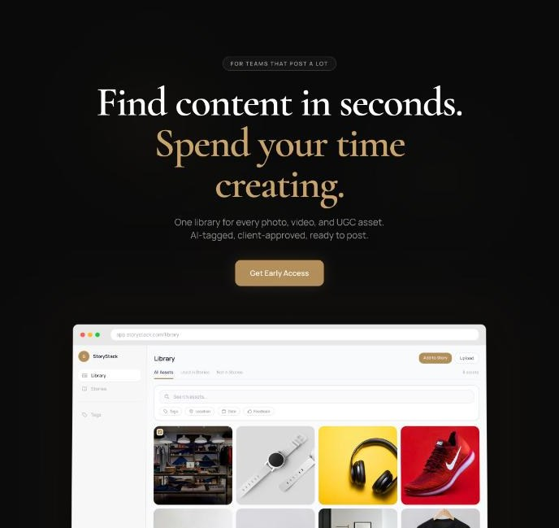
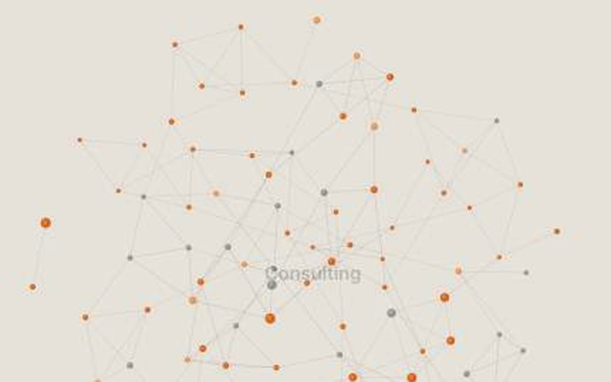
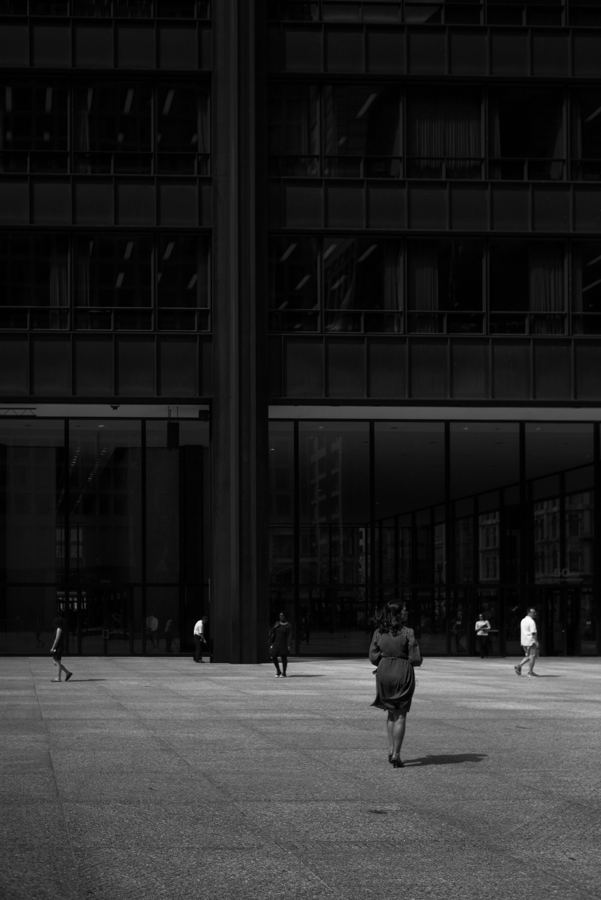

Kirill Polevoy
I've spent 15+ years leading product across fintech, insurance, and business travel. I joined a PE-backed company as its first product hire and helped rebuild it into the market leader within three years.
Now I run Full Range. We find where AI pays off and build only what drives revenue and margin. Nobody should do work a machine can do. I'm also a Claude Ambassador in Chicago.
The rest of the time I'm on the street with a Leica, shooting black and white. Gallery VICTOR represents my photography.
Things I've built
I built each of these to solve a problem of my own. All of them are live.

Tiny ViewersA scene guide for kids' movies. It flags the intense moments, when they happen and how intense they get.tinyviewers.com
StoryStackA single library for every photo and video a brand team shoots. AI tags each asset, so the right shot takes seconds to find.storystackstudios.comThings I've built

SpektrMy personal CRM and journal. Claude connects to it directly over MCP.spektr.kirillpolevoy.comShooting since 2003
I started on an old Russian Zorki film camera and moved to digital in 2010. Today I shoot black and white on a Leica M10 Monochrom, mostly on the streets of Chicago.

"Through a black and white lens, hidden stories of everyday objects become apparent."
Gallery VICTOR represents my work, which is also available on Artsy and 1stDibs. My book Chasing Light: A Decade of Photography was published in 2021.
Talks and events
Most of my talks cover AI for business owners and operators. Some cover the stories behind my photographs. As a Claude Ambassador, I also lead hands-on workshops for operations, finance and leadership teams.


Get in touch
For consulting work or print inquiries, reach out below.
- Workfullrange.ai
- Photokirillpolevoy.com
- LinkedInin/kirill-polevoy
- Instagram@k.polevoy
- X@polevoy_kirill